La sorpresa europea de 2013
Málaga CF
1948
Año de fundación del club
Boquerones
Una breve historia
Con raíces futbolísticas que se remontan a 1904 y refundado en 1994, el Málaga CF vivió su momento más recordado en la temporada 2012/13, cuando alcanzó los cuartos de final de la Champions League en su histórico debut continental.
Fieles a los colores
de Málaga
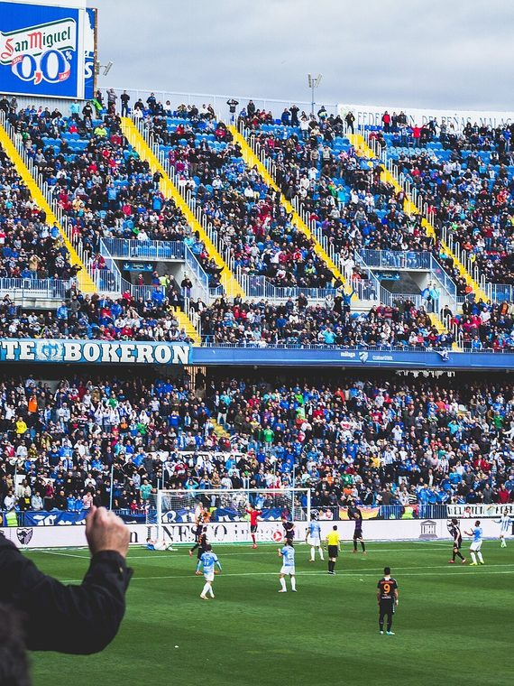
📷Foto pendiente
(malaga-1.jpg)';" />
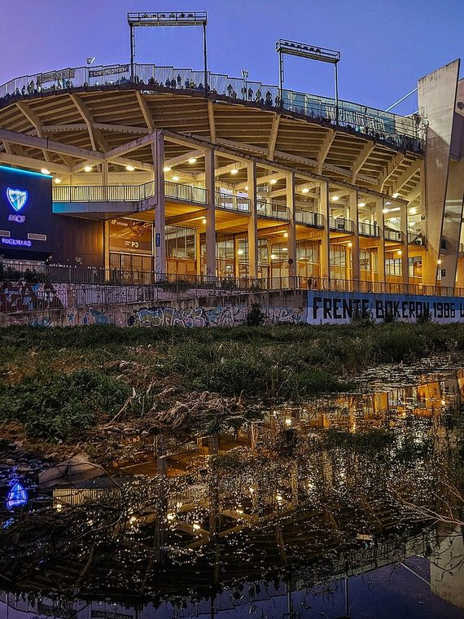
📷Foto pendiente
(malaga-2.jpg)';" />
Títulos y logros
Momentos que hicieron historia
★
Cuartos de final de la Champions League en 2012/13
★
Cuarto lugar en LaLiga en la temporada 2011/12 (mejor puesto histórico)
★
Debut europeo más exitoso de un club español en su primera participación
La rivalidad
El duelo que enciende a la afición
Temporada 2026 / 27
Plantilla del primer equipo
Datos de ejemplo — reemplázalos con la plantilla real en data/teams.js.
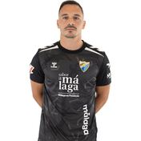
🧑';" /> A. Herrero Portero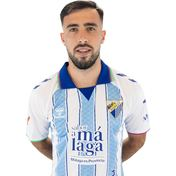
🧑';" /> C. Puga Defensa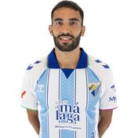
🧑';" /> Einar Defensa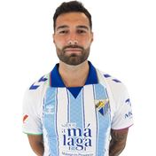
🧑';" /> Pastor Defensa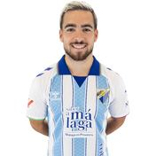
🧑';" /> Ramon Centrocampista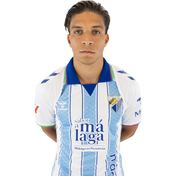
🧑';" /> Haitam Delantero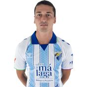
🧑';" /> Dotor Centrocampista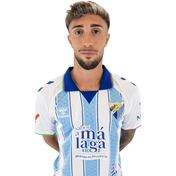
🧑';" /> D. Larrubia Centrocampista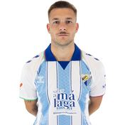
🧑';" /> Rafa R. Centrocampista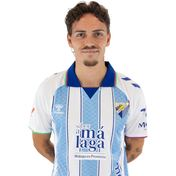
🧑';" /> Recio Defensa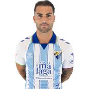
🧑';" /> Jauregi Delantero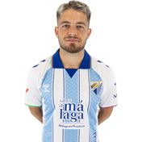
🧑';" /> Dani Lorenzo Centrocampista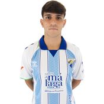
🧑';" /> Izan M. Centrocampista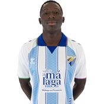
🧑';" /> Otu Jr Centrocampista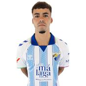
🧑';" /> Rafita Defensa